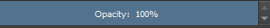
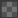

Unless you plan on painting everything on one layer, you should get to know the
layers panel. This panel is found on the bottom right corner of the screen.
When you create a document, you
will have 2 layers labeled "Paint Layer 1" and "Background." The background layer is locked by default so
that
you don't accidentally erase the background when you just try to erase your lines.
 Change the opacity of the selected layer
 Make layer invisible/visible
Make layer invisible/visible
Preview of what is on that layer
Name of the layer (Rename by double clicking it)
Prevents you from moving or painting on that layer
This is Krita's version of a clipping mask in Photoshop. If there
are several layers grouped together,
enabling the inherit alpha icon makes whatever is on that layer transparent if every layer below it is also
transparent in that location.
 Prevents you from drawing over transparent pixels on that layer
Create a new layer
Duplicate the selected layer
Move the selected layer up or down (You can also drag layers with
your mouse)
 Delete the selected layer
Delete the selected layer